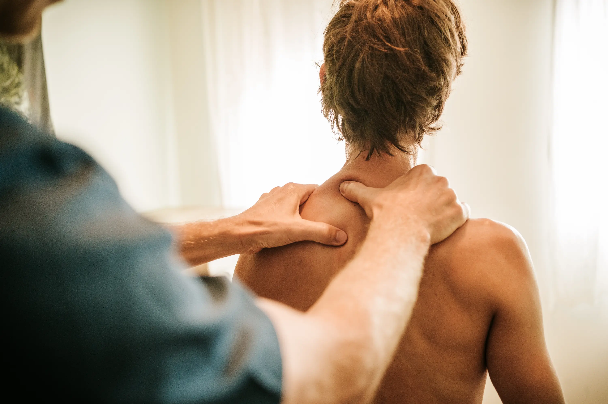
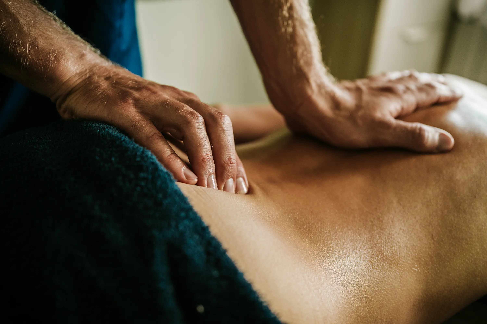
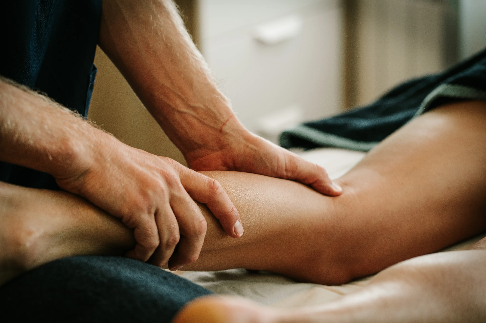

Natuurlijke ontspanning
Bij Quirobalance draait alles om diepgaande ontspanning op een natuurlijke manier. Door zachte massagetechnieken en een kalmerende omgeving helpen we je lichaam en geest tot rust te komen. Stress verdwijnt, spierspanning vermindert en je voelt je hernieuwd en in balans.
Persoonlijke aandacht
Elke persoon is uniek, en elke massage wordt afgestemd op jouw specifieke behoeften. We nemen de tijd om te luisteren naar jouw wensen en klachten, zodat elke behandeling precies is wat jouw lichaam nodig heeft. Persoonlijke zorg en aandacht staan centraal, zodat jij het beste uit elke sessie haalt.
Beweging & herstel
Massage is meer dan ontspanning; het ondersteunt herstel en verbetert prestaties. Of je nu herstelt van een blessure of je spieren wilt onderhouden als sporter, een gerichte massage helpt bij spierherstel en soepelheid. Beweging en ontspanning gaan hand in hand voor een sterk, gezond en veerkrachtig lichaam.